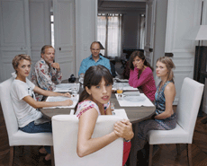

|
PARDONNEZ-MOI
Maïwenn le Besco | F 2006 | 88 Min.
Format: 35mm
Material: DV
Originalsprache: Französisch
Drehbuch: Maïwenn le Besco
Kamera: Claire Mathon
Schnitt: Laure Gardette
Ton: Pierre-Yves Lavoué
Musik: Mairwais Ahmadzaï
Mit Maïwenn, Pascal Gregory, Hélène de Fougerolles, Aurélien Recoing, Marie-France Pisier
Produktion: Franςois Kraus, Denis Pineau-Valencienne (Les Films du Kiosque)
In ihrem gnadenlos autobiografischen, zum großen Teil auf Mini DV gedrehten Film, beschließt Maïwenn mit ihrer Familie und all den Verletzungen und Lügengebilden hart ins Gericht zu gehen. Dabei trifft es zuallererst ihren Vater, dem sie Missbrauch und Verantwortungslosigkeit vorwirft. Dann ihre Mutter, die sich in amouröse Abenteuer stürzt, um das eigene Versagen in ihrer Rolle zu verdrängen. Zusehends geraten aber auch alle anderen Menschen in ihrem privaten Umfeld in die Schusslinie. Wenn dann auch noch der illegitime Vater ihrer kleinen Schwester die Szene betritt, wird es manchmal unerträglich hysterisch und intim zugleich.
Maïwenn schafft einen filmischen Raum, der physisch spürbar immer enger wird, bis sich schließlich für sie die Möglichkeit zu einem neuen Leben offenbart. Und letztendlich geht es immer nur um den Mut und die Fähigkeit, zu verzeihen.
Maïwenn, geb. 1976 in Les Lilas, Frankreich. Mit zwölf Jahren entdeckte sie der Regisseur Luc Besson für das Kino und engagierte sie für seine Filme Léon, der Profi und Das fünfte Element. Seitdem spielte sie in zahlreichen Filmen und Fernsehserien, zuletzt in Claude Lelouch’s Le Courage d’Aimer. Sie ist die Schwester von Isild le Besco, deren Film Démi-tarif ebenfalls beim diesjährigen Underdox Film Festival präsentiert wird.
Filme: I’m an Actress 2002 | Pardonnez-moi 2006
zurück
|